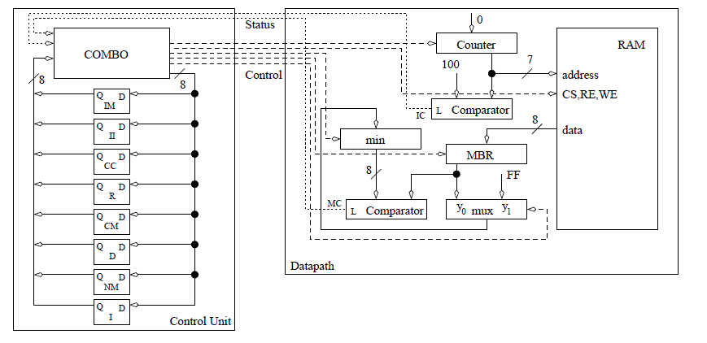
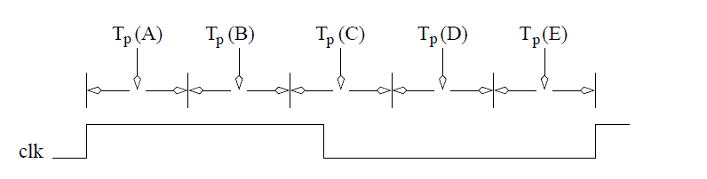
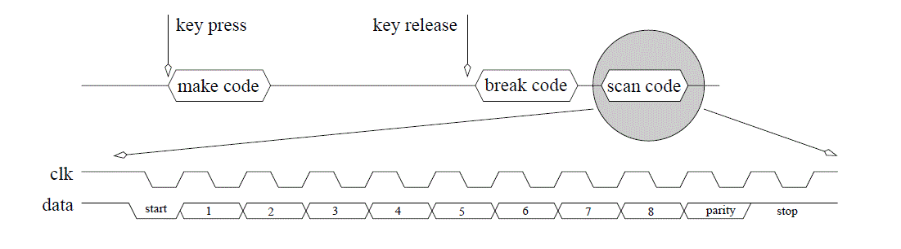

Lesson Notes for Lesson 11
example code for today's class
See lec11 folder in class github repo [class github repo](https://github.com/USAFA-ECE/ece383_wksp)Datapath and control - timing
There are several important reasons to examine the timing behavior of a datapath and control circuit. First, so that we can make informed predictions about the expected clocking frequency of our circuits. Second, so that we can identify critical paths in our circuit. Third, so that we can develop our intuition about the operation of these complex circuits.To facilitate a discussion of the timing behavior of the datapath and control circuit, lets examine the circuit from last lecture, the search algorithm for a minimum shown below.

Like we did in our last lecture, we will examine the time its takes, starting from
a positive clock edge, to get the next state setup on the flip flops in the FSM.
The positive clock edge has two
primary effects: It causes the FSM to transition into a new state and it
causes the registers in the datapath to latch new values. The propagation
delay of the flip flops is referred to as Tp(A). Since the datapath
requires a valid control word before it can begin, the critical path includes
the output equation logic.
The D flip flops which store the state of the control unit are the
input of the OEs. The delay between the application of a
valid Q to when the OEs assert their new values is referred to as Tp(B).
The OEs of the FSM are the control word to the datapath
telling the elements in the datapath what operation to perform.
Sequential logic components do not actually perform their instructed operations
until the next clock edge arrives. On the other hand, combinational
logic components perform their operations immediately. It is easy to construct
datapath instances where the control word effects the status input to
the control unit. For example, the control word selects an input of a mux,
whose output is routed to a comparator, whose status output is sent to the
control unit. Thus, the combinational logic is on the critical path because
its delay constrains the maximum clocking frequency. The time difference
between the application of a valid control word to the datapath and the
status input to the control unit becoming valid is referred to as Tp(C).
The status input to the control unit are routed to the MIE logic.
The delay between the status inputs becoming valid and the
MIEs becoming valid is referred to as Tp(D).
Once the memory inputs have stabilized, they must be allowed some
setup time before the next clock edge. The setup time is referred to as Tp(E).

VHDL Instantiation
There are two important points that need to be made regarding
VHDL instantiation.
Binding
The term “binding” is used to refer to the technique of assigning
signals in the top-level entity (caller) to the signals in the instance.
Up till now we have been using a verbose binding technique where
the signals in the top-level and instance are explicitly related.
For example, in lecture 10, we used the following instantiation to bind the signals of a generic counter to the testbench.
uut: lec10
Generic map(5)
PORT MAP (
clk => clk,
reset => reset,
crtl => crtl,
D => loadInput,
Q => cntOutput);
In this case, the signals clk, reset, crtl, D and Q were defined inside the lec10 component. The signals clk, reset, crtl, loadInput, and cntOutput were defined as signals in the higher-level testbench. However, we could shorten this instantiation by using the default binding calling convention shown in the code below.
uut: lec10
Generic map(5)
PORT MAP (clk, reset, crtl, loadInput, cntOutput);
The important point to make here is that when you use the default
binding, the order of the signals must match the exact same order
that is defined in the entity description. This generates a
more compact instantiation statement.
Unused outputs and the OPEN keyword
There will be cases where you have a component that you would
like to instantiate, but do not need all the output signals.
A good example is given by the comparator below.
entity compare is
generic(N: integer := 4);
port(x,y : in unsigned(N-1 downto 0);
g,l,e: out std_logic);
end compare;
Note that g=1 when x > y, and l=1 when x < y, and e=1 when x=y. If you wanted to know if 2 signals (say A and B) were equal to one another but did not care about less and greater, then you could use the following component instantation.
example: compare port map (A,B,OPEN, OPEN, equal);
This notifies the synthesis engine that it can remove the logic
associated with any of the OPEN signals and reduce the resources
used on the FPGA.
Subvectors and concatenation
There are times when we will need to rebuild a std_logic_vector
from pieces of other vectors. In order to accomplish this you
will need to understand subvectors and the concatenation operation.
Since vector is defined as signal(7 downto 0), you can replace
the limits with anything in between to get a small subvector.
So, for example, you could ask for signal(5 downto 2) for a 4-bit
sub-vector of signal.
The concatination operation, &, is a way to “glue” two vectors together.
So for example, to build a 8-bit vector you could legally
write in VHDL signal(3 downto 1) & signal (7 downto 3);
These two concepts come together in the shift register used in the lecture 11 code, which contains the following line of VHDL code.
shiftReg <= kbData & shiftReg (10 downto 1);
Keyboard serial to parallel converter
| Nomenclature: | PS/2 Keyboard |
| Data Input: | none |
| Data Output: | 1-bit data, nominally logic 1 |
| Control: | none |
| Status: | none |
| Others: | 1-bit clk, nominally logic 1 |
| Physical Input: | key press and key release events |
| Physical Output: | none |
| Behavior: | When a key is pressed, its 8-bit make code is transmitted. When a key is released, an 8-bit break code is transmitted, immediately followed by the key's 8-bit scan code. |
While the table implies a keyboard is an output-only device, the truth is the clock and data lines are open collector signals. In other words, the clock and data lines can safely be manipulated by the external world to configure a keyboard. A common example of such bidirectional communication occurs every time the Caps Lock key is pressed on a keyboard. When this happens, the keyboard sends the Caps Lock scan code to the PC and the PC in return writes a Toggle Caps Lock LED command to the keyboard. Since the keyboard scan code reader does not write to the keyboard, it assumes that the clock and data signals are outputs from the keyboard. When a keyboard key is pressed, the keyboard sends one packet of information as shown at the top of Figure 9.14. The 8-bit data contained in this make code is the scan code of the key pressed. The relationship between the keys and their scan codes is not at all obvious and is not based on ASCII. The exact codes are immaterial to the discussion; the curious reader can perform a quick Internet search on PS/2 keyboard scan codes to get a complete listing. When a key is released, two packets are transmitted as shown at the top of Figure 9.14. The break code is almost always equal to 0xF0. The final packet is the scan code of the released key.

While there is a scan code for “a” key, there is not a scan code for “A”. The device reading the keyboard interprets the make code for shift, and then sees a make code for “a”. From this, the device reading the keyboard should understand that the user wants a capital “A”. More than likely, the user will release the “a”, first causing its break code and scan code to be transmitted, followed by the break and scan code for the “shift” key. Each of these packets consists of 11 bits as shown in the lower half of Figure 9.14. The data from the keyboard is always valid on the falling edge of the clock signal. The keyboard asserts new data on or around the rising edge of the clock. The 11-bit data packet always begins with a start bit equal to 0. Following the start bit are 8-bits of data, transmitted least-significant bit first. Following the data bits is an odd-parity bit, whose value is set by the keyboard so that the total number of 1s transmitted in the eight data bits plus the parity bit equals an odd number. For example, if the eight data bits are 01100011, then the parity bit would equal 1 so that the total number of 1s would be an odd number, in this case 5. By adding some additional circuitry, the parity bit can be used to detect errors in transmission. Following the parity bit, the final bit of the data packet, the stop bit, is sent and is always equal to 1.
| Nomenclature: | Keyboard scan code reader |
| Data Input: | 1-bit kd data, nominally logic 1 1-bit kd clk, nominally logic 1 |
| Data Output: | 8-bit scan code |
| Control: | none |
| Status: | 1-bit busy, nominally logic 0 |
| Others: | 1-bit clk, nominally logic 1 |
| Behavior: | Interprets the PS/2 keyboard clk and data signal from a keypress event and outputs the associated scan code. The busy signal goes high when the first data bit arrives and stays high until the last data bit is received. Busy is low only when there is a valid scan code on the output. |
Looking at the timing diagram and the description above, I came up with the following algorithm.
1. while(1) {
2. busy=0;
3. while (kb_clk == 1);
4. busy=1;
5. for (count=0 count<33; count++) {
6. while(kb_clk == 1);
7. shift = (shift << 1) | kb_data;
8. while(kb_clk == 0);
9. } // end for
10. scan = shift[9-2]
11. } // end while 1
Now lets build the datapath and control using the technique learned in lecture 10. Your homework is to build the control unit for the keyboard scancode reader.